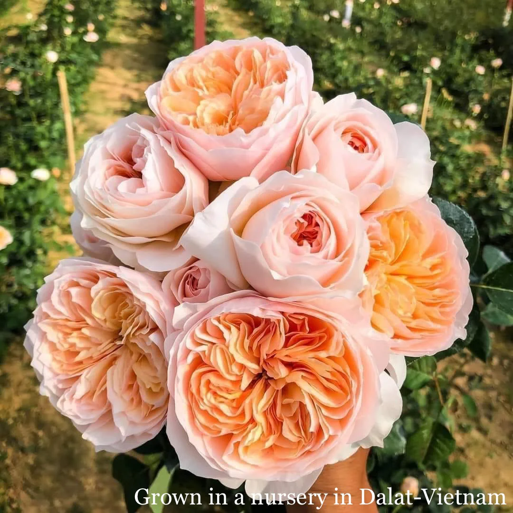

To Miss Nancy

This is the Juliet Rose—one of the rarest and most breathtaking roses ever grown, admired for its soft petals, warm glow, and quiet elegance. It doesn’t shout for attention; its beauty speaks gently, yet stays unforgettable. In so many ways, it reflects you—rare, graceful, and effortlessly captivating.
I hope this puts a gorgeous smile on your face, miss, the kind that lingers and brightens everything around you. May your day unfold with ease, warmth, and little moments that remind you just how special you are. Have a truly wonderful day, filled with beauty that finds you in the simplest ways 🌹✨